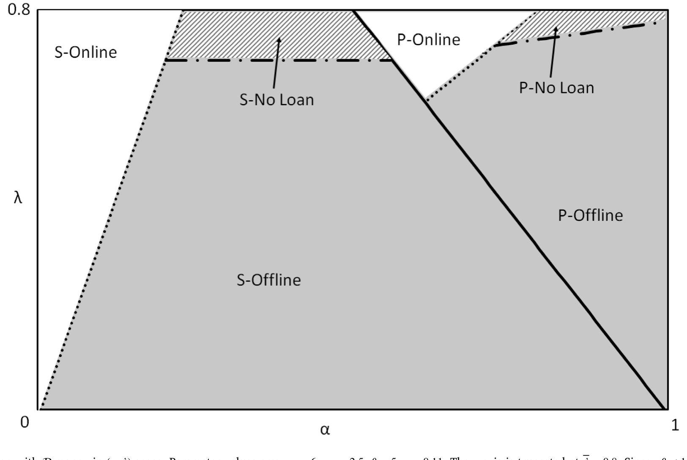
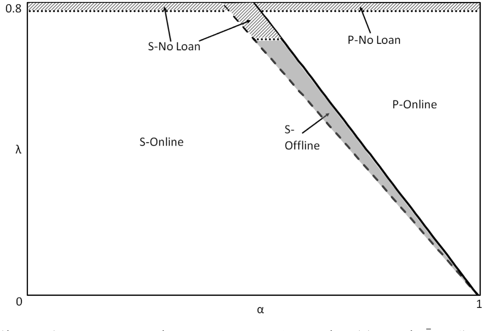
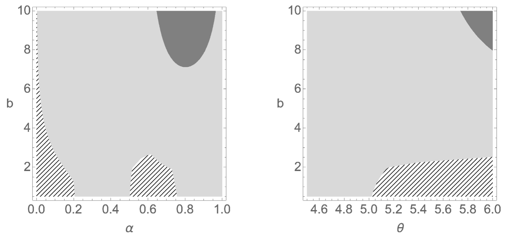
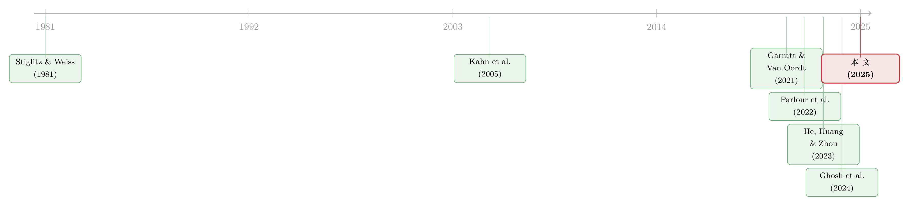

隐私不是免费的护身符：当「匿名」变成借款人从贷款人兜里掏走的租金
本文读的是 Ahnert, Hoffmann & Monnet (2025, Journal of Financial Economics)：在一个借贷模型里，数字支付让商户能上网卖货（高效率），但会把交易信息泄露给贷款人；现金保住了匿名（高隐私），却把商户困在低效的线下渠道。商户在「效率」与「隐私」之间权衡。关键在于——隐私的收益本质上是借贷市场里的信息租金，而这笔租金是从贷款人兜里掏出来的。于是隐私增强技术会把剩余从贷款人重新分配给商户，隐私变多，福利未必变高。
1 引言：当所有人都说「隐私越多越好」
现金正在快速退出舞台。手机钱包、即时支付系统让数字支付变得又快又方便，越来越多的生意搬到了线上。与此同时，几乎所有主要央行都在为各自的央行数字货币 (central bank digital currency, CBDC) 做一件事：郑重承诺它会保护隐私。在欧央行关于数字欧元的公众咨询里，隐私甚至被列为公众的头号关切（European Central Bank, 2021）。零知识证明 (zero knowledge proofs, Goldwasser et al., 1989)、区块链这些新技术，似乎都在朝同一个方向使劲：让数字支付既留痕又匿名，鱼与熊掌兼得。
这听上去是一个皆大欢喜的故事——隐私是消费者的护身符，技术让护身符越来越灵，我们离「完美隐私」越来越近。
但这篇论文偏要在这股潮流里浇一盆冷水。它问的是一个看似技术、实则要命的问题：给数字支付加上隐私，到底是谁受益，谁买单？ 它的回答相当反直觉：隐私确实有价值，但它的价值在借贷市场里是一种信息租金 (informational rent)；而租金不是凭空冒出来的，它是从贷款人手里转移过去的。把隐私推到极致，可能掏空贷款人，让她干脆不放贷——于是整个信贷市场崩溃，福利不升反降。
我们先把这个张力的来源讲清楚。
2 一个朴素的两难：上网卖货，还是保住匿名？
故事的主角是一群需要外部融资的卖家 (sellers，文中也称 merchants)。他们要分两轮生产，但有一个秘密：自己究竟是「好苗子」还是「差苗子」，只有自己心里清楚。
贷款人（一位垄断的银行家，文中是「she」）很想知道这个秘密。理由有两个：第一，她想从第一轮生产里榨出最大的剩余；第二，她要决定第二轮要不要续贷——只有「好苗子」才值得续贷，给「差苗子」续贷等于把钱扔进水里（这是典型的逆向选择 (adverse selection)）。
那贷款人怎么知道卖家的秘密？答案藏在支付方式里。
- 卖家如果上网卖货（线上，
v = O），交易必须走数字支付，会留下一条可观测的痕迹（「信号」signal）。贷款人顺着这条信号，就能推断出卖家赚了多少、是什么类型。 - 卖家如果在实体店卖货（线下，
v = F），可以收现金，不留任何数字足迹。贷款人只能两眼一抹黑，被迫用合同条款去「钓」信息——这就是甄别 (screening)，而甄别的代价，是卖家能赚到一笔信息租金。
于是张力出现了：
线上分销创造的蛋糕更大，但缺乏隐私意味着卖家只能分到其中较小的一块；线下分销蛋糕更小，但现金带来的匿名让卖家能分到更大的一块。如果「蛋糕变大」的好处压过「丧失隐私」的代价，卖家就上网；反之，他就缩回线下、收现金。
这就是全文反复打磨的那一个核心：卖家手里的隐私（匿名）不是一种道德权利，而是一张能在谈判桌上多分一块蛋糕的「底牌」。接着，一个自然的问题是——这张底牌一旦因为技术进步而变得更好打，会发生什么？
3 模型设定：四期、两类卖家、一个垄断贷款人
把直觉翻译成模型。时间是 t = 0,1,2,3，无贴现，单一商品，所有人风险中性。
卖家。 单位质量的连续卖家，其中比例 q ∈ (0,1) 是高类型（H），其余 1−q 是低类型（L）。L 卖家在 t=1 产出低质量品、t=3 什么都不产；H 卖家在 t=1 产出高质量品，并在 t=3 产出价值 θ > 1 的续作。每一轮生产都要在上一期投入 1 单位，必须向贷款人借。生产不可分，卖家在 t=1 之初私下得知自己的类型。
贷款人。 垄断，做「要么接受、要么走人」(take-it-or-leave-it) 的报价；既不能承诺长期合同，也不能承诺不重新谈判。她的全部议价能力都被一件事制衡：卖家随时可以卷款跑路 (abscond)，带走销售额或贷款的一个比例 λ ∈ (0,1)。
这个 λ 是全文最关键的参数之一。表面上它是「跑路威胁」，但作者明说，可以把它理解为借贷市场的竞争程度或合同执行力度——竞争越激烈、法律对债权人保护越弱，卖家能保住的份额 λ 就越高。
销售与渠道。 线上分销高效：H 卖家稳稳拿到销售额 p_H。线下分销低效：高质量品只有概率 α 卖出 p_H，剩下 1−α 的概率只能卖 p_L < p_H。所以 α 度量的是线下渠道的相对效率。期望销售额满足：
$$p_O = q\,p_H + (1-q)\,p_L, \qquad p_F = p_O - (1-\alpha)\,q\,\Delta_p,\quad \Delta_p \equiv p_H - p_L$$
下面这条「线下相对线上少卖了多少」的式子，是整篇文章效率损失的源头。我们把它逐块拆开看：
直觉很清楚：线下渠道之所以亏，是因为有 q 比例的好苗子、以 1−α 的概率、白白损失了 Δ_p 这道价差。α 越低（线下越烂），这块损失越大，卖家越该上网。
支付与信号。 线下收现金，不留痕；线上必须数字支付，会向贷款人发出一个关于收入的信号：
$$\sigma(p) = \begin{cases} p & \text{with prob. } x\\ p' & \text{with prob. } 1-x,\ p'\neq p\end{cases}$$
其中 x ≥ 1/2 是信号的精度。现金交易则 σ = ∅，毫无信息。
三条假设。 作者用三条假设把问题「调到有意思的区间」：
$$\text{Assumption 1:}\quad p_H \ge \theta > p_L \ge 1$$
这保证贷款人能从「高销售的好苗子」(HH) 手里榨干续作剩余，却榨不干「低销售的好苗子」(HL)——于是她在线下时面对一道非平凡的合同设计难题。另两条假设给 λ 和 q 加了上下界（λ ∈ (λ̲, λ̄)，q ∈ (q̲, q̄)），我们马上会用到。
4 基准解：透明的数字支付（δ-money）
先解一个传统世界——δ-money（即银行存款，deposits）。它代表当今以银行为中心的支付体系：信号精度 x = 1，贷款人实时看到一切。咨询公司 PwC 甚至估计，「支付产生了银行约 90% 的有用客户数据」。在这个世界里，匿名无处藏身。
用逆向归纳法求解。先看 t=2 的续贷决定。H 卖家会在 t=3 产出 θ，但他能卷款跑路拿到 λθ。垄断贷款人于是把续贷的还款额 R 顶到让 H 卖家「跑不跑都一样」的临界点：
$$R^* = (1-\lambda)\theta \tag{1}$$
这一步为什么成立？因为只要 θ − R ≥ λθ，卖家就愿意还款而非跑路；垄断者把这个不等式压成等式，于是 R = (1−λ)θ，恰好给卖家留下他的外部选择 λθ、一分不多。
接着，贷款人愿意续贷的前提是这笔还款至少能覆盖她 1 单位的资金成本：
$$R^* \ge 1 \;\Longleftrightarrow\; \lambda \le \bar\lambda \equiv \frac{\theta-1}{\theta}$$
反过来，如果贷款人不知道类型，她只能以概率 q 收到 R*（因为只有 H 会产出），期望收益 (1−λ)qθ；当这低于 1 时，盲目放贷无利可图：
$$\underline\lambda \equiv \max\left\{\frac{q\theta-1}{q\theta},\,0\right\}$$
这两条边界把可行的 λ 框进 (λ̲, λ̄)。值得一提的是，图里的标定参数是 p_H = 6, p_L = 2.5, θ = 5, q = 0.11。代进去你会发现两个漂亮的巧合：θ = 5 给出 λ̄ = 4/5 = 0.8，正好是图中纵轴被截断的位置；而 qθ = 0.55 < 1，于是 λ̲ = 0。这不是凑数，而是模型边界在图上的直接显形。
在 δ-money 下，因为信号完美，贷款人对线上卖家的类型了如指掌：她能精准续贷给好苗子、精准拒绝差苗子，事后再融资是有效率的。但代价是，卖家上网就等于裸奔，赚不到任何信息租金。如图 1 所示，在 (α, λ) 平面上，参数会把经济划分成若干个均衡区域——有的区域卖家上网，有的缩回线下，还有一块区域贷款人干脆拒发第一笔贷款。

Figure 1: Equilibrium Map with in (𝛼,𝜆)-space. Parameter values are: 𝑝 𝐻=6, 𝑝 𝐿=2.5, 𝜃=5, 𝑞=0.11. The 𝑦-axis is truncated at 𝜆=0.8. Since 𝑞𝜃<1, 𝜆=0. L
5 反转之一：隐私货币（e-money）让商户「两头通吃」
然后，技术进步登场了。
设想支付数据飘到银行体系之外（经由非银支付机构），或者隐私保护技术、CBDC 让贷款人再也收不到信号。作者把这种货币叫 e-money。它意味着什么？卖家可以两头通吃：既上网、享受线上分销的高效率，又因为支付匿名而继续赚到那笔信息租金。
乍看之下，这简直是天上掉馅饼。事实上它确实带来两个正面效应：(i) 卖家上网的激励更强了（因为上网不再丧失隐私）；(ii) 贷款人被迫总是通过合同把信息全套出来，于是她的再融资决定反而更有效率。从这两个角度看，隐私是提高福利的。
但真正关键的一步在于——这块馅饼是谁掏钱买的？ 答案是贷款人。卖家多赚的信息租金，正是贷款人少赚的利润。当卖家两头通吃，贷款人的利润率被进一步压薄，她越来越难覆盖资金成本。于是当卖家的外部选择 λ 足够大时，贷款人会做出一个对所有人都糟糕的决定：干脆不发第一笔贷款。
这就是隐私的「暗面」第一次露头：它通过再分配（而非创造）来让商户受益，而再分配一旦过头，就会引发信贷市场的崩溃。图 2 把 e-money 下的均衡分区画在同一张 (α, λ) 平面上，你能直接看到「拒贷区」相对图 1 的变化。

Figure 2: Equilibrium Map with -money in (𝛼,𝜆)-space. Parameter values are: 𝑝 𝐻=6, 𝑝 𝐿=2.5, 𝜃=5, 𝑞=0.11. The 𝑦-axis is truncated at 𝜆=0.8. Since 𝑞𝜃<1
注意一个微妙之处：e-money 并没有把现金完全挤出。因为在某些条件下，现金能产生更高的信息租金，所以 e-money 的均衡里仍可能保留线下分销。隐私货币不是现金的完美替代品——这一点在福利分析里很要紧。
6 反转之二：可编程货币（π-money）与「择时披露」
如果 e-money 的问题在于「商户把信息一锅端地藏了起来」，那有没有办法只藏该藏的，露该露的？
这就引出了第三种货币——π-money，对应「让用户掌控自己支付数据」的设计，呼应了现实中的开放银行 (open banking) 监管。在这种货币下，卖家可以选择：贷款人到底收不收到信号、什么时候收到。
这里藏着全文最精巧的一招。作者证明，在均衡里，卖家会选择在第一笔贷款偿还之后才释放一个完美信号。为什么是这个时点？因为信息流有两副面孔：
- 光明面：信号能帮贷款人识别好苗子、发放续贷——这对卖家有利（他能拿到第二轮融资）。
- 暗面：信号让贷款人在第一轮就榨干卖家的剩余——这对卖家不利。
「还完第一笔贷款再披露」这个择时，恰好把光明面从暗面里切割出来：第一轮的租金保住了（信息还没露），第二轮的续贷效率也保住了（信息及时露）。结果，卖家永远选择上网，线下的低效率被彻底消除。
但天下没有免费的午餐。π-money 把权力进一步交到商户手里，贷款人的利润率压力更大了——拒发初始贷款的参数范围因此扩大。换句话说，给了商户更强的隐私掌控权，反而更容易把贷款人逼到「不如不放贷」的墙角。
于是三种货币各有各的毛病：δ-money 牺牲了卖家的隐私激励；e-money 和 π-money 又把太多剩余塞给卖家、威胁到信贷市场本身。没有一种数字货币是无条件最优的。 这就把我们逼向最后一问。
7 落点：社会规划者该发哪种货币？
既然没有一种货币包打天下，作者把笔锋转向一个社会规划者 (social planner)。她面对的是关于卖家外部选择 λ 的事前不确定性，要在 δ / e / π 三种支付工具里选一种来发行，最大化功利主义福利。结论可以浓缩成三句话：
- 隐私（e-money）在大多数参数下最优。因为它在两件事之间取得平衡：(i) 给卖家足够的激励去线上分销；(ii) 又让贷款人还能榨到足够剩余、覆盖资金成本。
- 端用户掌控（π-money）只在很窄的角落里有益——当线上分销的社会收益小、且卖家外部选择差时。否则，它带来的「从贷款人到卖家」的再分配「太大了」，大到能引发信贷市场崩溃。
- 传统存款（δ-money）在另一端最优——当线上分销的社会收益大、且卖家本就能分到足够大一块时。
图 3 把这套「什么时候该选哪种货币」的逻辑画了出来。

Figure 3: illustrates how the welfare-maximizing choice ∗ depends on
这就是全文那一个核心被推到底的样子：隐私不是越多越好的免费护身符。在借贷的语境里，隐私 = 借款人的信息租金 = 贷款人的利润损失。隐私增强技术真正改变的，不只是「保护了谁」，更是「把蛋糕重新切给了谁」——而切得太狠，整张桌子都会掀翻。
（关于「数据让定价更准、福利却未必更高」的另一面，可参见《数据让定价更准，谁的钱包先变薄？》；关于支付数据如何重塑信贷可得性，可参见《一辆共享单车，如何让1亿人「被看见」？》。）
8 文献脉络
这条研究的根，扎在两片土壤里。
一片是借贷市场的信息经济学。早在 Stiglitz & Weiss (1981) 就告诉我们，信息不对称会带来逆向选择与信贷配给——更好的信息能保护贷款人、扩大信贷供给。这正是本文里「贷款人想看穿卖家类型」的理论祖源。
另一片是支付与隐私。Kahn, McAndrews & Roberds (2005) 的名篇《Money is privacy》指出，现金的匿名能防范道德风险（比如被偷）。本文借了「现金 = 匿名」这个骨架，却换了血肉：这里匿名的好处不是防盗，而是在借贷里减少被榨取的租金。接着，Garratt & Van Oordt (2021) 把隐私当作一种公共品来分析，论证私人对隐私的投资会低于社会最优。

然后，FinTech 与开放银行把「支付信息」直接推到了信贷的中心。Parlour, Rajan & Zhu (2022) 研究 FinTech 抢走支付流、威胁银行信息来源后对放贷与定价的冲击；He, Huang & Zhou (2023) 则发现，当借款人拥有自己的数据，开放银行在贷款人数据分析能力不一时反而可能伤害借款人（赢家诅咒）。Ghosh, Vallee & Zeng (2024) 提供了一个竞争性放贷模型，借款人用支付方式给自己的「挪用倾向」发信号。
本文站在这一切的交汇处：它显式地把「信号」与「支付数据」挂钩，证明贷款人有时宁可不要完全分离的合同，从而引出新型的低效率；并且把「端用户对数据释放时点的掌控」这一更宽的隐私定义纳入模型。它和 Agur, Ari & Dell'Ariccia (2023) 的区别尤其值得一提——在后者那里，隐私是端用户的一项纯外生成本；而本文把隐私的成本与收益内生化了：收益来自合同问题里的信息租金，成本来自线下分销造成的低销售。
9 评论与延伸（Q&A + 研究方向）
(a) 几个可能的疑问
Q：这里的「隐私」和我们平时担心的「被价格歧视」是一回事吗？
不是。日常语境里隐私多指防止商家用你的数据做价格歧视、榨取消费者剩余（如 Boissay et al., 2021 强调的「数据—竞争」张力）。本文的隐私收益发生在借贷市场：匿名让借款人少被贷款人榨取信息租金。它也不同于 Kahn et al. (2005) 的「防盗」式匿名。换了战场，隐私的经济含义就变了。
Q：「隐私增强反而降低福利」到底是怎么发生的？
关键是再分配而非创造。隐私把剩余从贷款人转移给卖家。当卖家外部选择
λ足够高、垄断贷款人连资金成本都覆盖不了时，她会拒发初始贷款，整个信贷市场停摆——这部分本可实现的产出全没了。隐私创造的效率收益，被它引发的市场崩溃抵消甚至反超。
Q：e-money 让商户「两头通吃」，听上去全是好处，坏处在哪？
好处是真的：上网激励更强、贷款人被迫套全信息、再融资更有效率。坏处藏在分配里——卖家多赚的，正是贷款人少赚的。利润率被压薄后，在
λ高的区域，贷款人选择不放贷。一桩对个体卖家的好事，可能是对整个市场的坏事。
Q：π-money 的「择时披露」凭什么比 e-money 更聪明？
因为它把信息的「光明面」（识别好苗子、发放续贷）和「暗面」（第一轮就被榨干租金）在时间上切开：卖家在还完第一笔贷款后才释放完美信号。这样第一轮的租金保住了，第二轮的续贷效率也保住了，卖家于是永远上网。代价是贷款人利润压力更大、拒贷区更宽。
Q：贷款人是垄断者，结论是不是被这个极端假设绑架了？
垄断只是把「分配」这条主线推到极致，便于看清机制。而且
λ本身就可解读为竞争程度：竞争越激烈，卖家能保住的份额λ越大，越靠近「贷款人无利可图」的边界。所以放松垄断，定性结论（隐私加剧分配压力、可能压垮放贷）反而会更强，而非消失。
Q：现金既然这么「低效」，为什么 e-money 没把它彻底挤掉？
因为在某些参数下，现金能产生更高的信息租金，对卖家更划算。所以即便有了隐私数字货币，均衡里仍可能保留线下现金分销。这也解释了为什么作者在福利分析里要同时保留多种工具——没有一种是无条件占优的。
(b) 几个可能的研究问题与提案
1. 把模型搬进公司债一级市场。 【经济故事】发行人的「现金流/支付数据」披露程度，会影响承销商与投资者对它的甄别能力，进而影响定价与配售——这正是「信号 vs. 租金」张力在债券市场的翻版。 【可行性】中。可用一级市场发行数据 + 发行人财报透明度代理变量，做横截面回归；识别难点在于「透明度」内生，需要找外生冲击（如披露监管改革）做 DiD。
2. 外资持有人与跨境支付数据。 【经济故事】外资贷款人对本地企业的支付/现金流数据可得性，天然比本地银行差。本文逻辑预测：信息劣势会通过「赢家诅咒」抑制外资信贷供给（呼应 He, Huang & Zhou, 2023）。这与本博客长期关注的外资持有人主题直接相关。 【可行性】中低。需要跨境银团贷款或公司债持有人数据，叠加各国开放银行/数据本地化政策差异；数据获取与口径是主要障碍。
3. 开放银行推广的事件研究。 【经济故事】π-money 的「数据掌控」最接近现实里的开放银行。模型预测它只在「线上收益小 + 借款人外部选择差」的角落里改善福利，否则可能收紧信贷。 【可行性】中。可借 Babina et al. (2024) 整理的各国开放银行推行时点，做事件研究/DiD，检验信贷可得性与利差对「信息公平竞争」机制的反应。
4. 支付透明度与公司债二级市场流动性。 【经济故事】若支付数据塑造了贷款人的信息优势，这种优势会不会外溢到二级市场的做市与流动性供给？信息越透明，逆向选择越小，价差越窄？ 【可行性】中低。需要把「支付数据透明度」操作化为可测变量，并与 TRACE 类流动性指标连接；机制识别偏弱，更适合作为相关性证据的探索。
5. CBDC 隐私设计的福利标定。 【经济故事】本文给出了「何时该选哪种货币」的定性分区（图 3）。一个自然的下一步，是把模型标定到真实支付/信贷数据上，量化隐私设计的福利得失。 【可行性】低—中。理论标定可做（沿用作者的参数结构），但缺乏 CBDC 实地数据来外部验证，结论会停留在「校准练习」层面。
10 我的判断
这篇论文最漂亮的地方，是把一个被反复念叨却很少被内生化的概念——隐私——拆成了一对清清楚楚的收益与成本：收益是合同问题里的信息租金，成本是线下分销的低销售。一旦这么拆开，「隐私越多越好」这个直觉就被干净利落地证伪了。它给当下汹涌的 CBDC「隐私优先」叙事提了一个冷静而扎实的反例：隐私设计本质上是一道再分配的旋钮，而不只是一项消费者保护。π-money 的「择时披露」更是一个有现实抓手（开放银行）的精巧机制设计。
但也有让我对识别（这里是「机制的稳健性」）保持谨慎的地方。其一，全部张力都系在「垄断贷款人 + 卷款跑路 λ」这套结构上；作者论证竞争会让结论更强，但若改用更标准的竞争性放贷设定，福利分区的形状是否还稳，值得验证。其二，模型把「支付匿名 ↔ 线下低效」绑成了硬约束（线上必须数字、线下才能现金），现实里数字支付同样能匿名化、线下也能高效，这条绑定一旦松动，效率—隐私的权衡未必还这么干净。其三，这是一个高度风格化的理论，参数（p_H=6, p_L=2.5, θ=5, q=0.11）是为画图而设，离「可标定到数据」还有距离。
我最想看到的后续，是有人把这套「信号—租金」逻辑搬到能拿到数据的战场上——开放银行的推广、FinTech 进入、或公司债一级市场的披露改革——用一次准自然实验，去检验「隐私增强→剩余从贷款人流向借款人→信贷可得性收紧」这条链条到底在数据里有多强。理论已经把假说削得很锋利了，接下来该让数据说话。
参考文献
Acquisti, A., Taylor, C., Wagman, L. (2016). The economics of privacy. Journal of Economic Literature 54(2), 442–492.
Agur, I., Ari, A., Dell'Ariccia, G. (2023). Bank competition and household privacy in a digital payment monopoly. IMF Working Paper 2023(121).
Ahnert, T., Hoffmann, P., Monnet, C. (2025). Payments and privacy in the digital economy. Journal of Financial Economics 169, 104050.
Boissay, F., Ehlers, T., Gambacorta, L., Shin, H.S. (2021). Big techs in finance: on the new nexus between data privacy and competition. BIS Working Paper 970.
Garratt, R.J., Van Oordt, M.R. (2021). Privacy as a public good: a case for electronic cash. Journal of Political Economy 129(7), 2157–2180.
Ghosh, P., Vallee, B., Zeng, Y. (2024). FinTech lending and cashless payments. Journal of Finance (forthcoming).
Goldwasser, S., Micali, S., Rackoff, C. (1989). The knowledge complexity of interactive proof systems. SIAM Journal on Computing 18(1), 186–208.
He, Z., Huang, J., Zhou, J. (2023). Open banking: Credit market competition when borrowers own the data. Journal of Financial Economics 147(2), 449–474.
Kahn, C.M., McAndrews, J., Roberds, W. (2005). Money is privacy. International Economic Review 46(2), 377–399.
Parlour, C.A., Rajan, U., Zhu, H. (2022). When FinTech competes for payment flows. Review of Financial Studies 35(11), 4985–5024.
Stiglitz, J.E., Weiss, A. (1981). Credit rationing in markets with imperfect information. American Economic Review 71(3), 393–410.